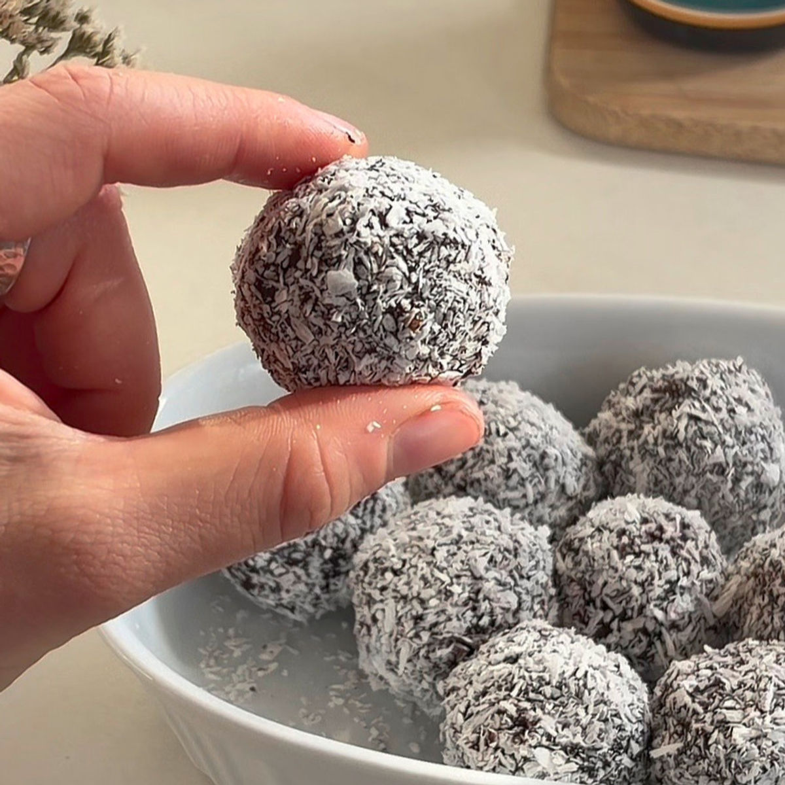
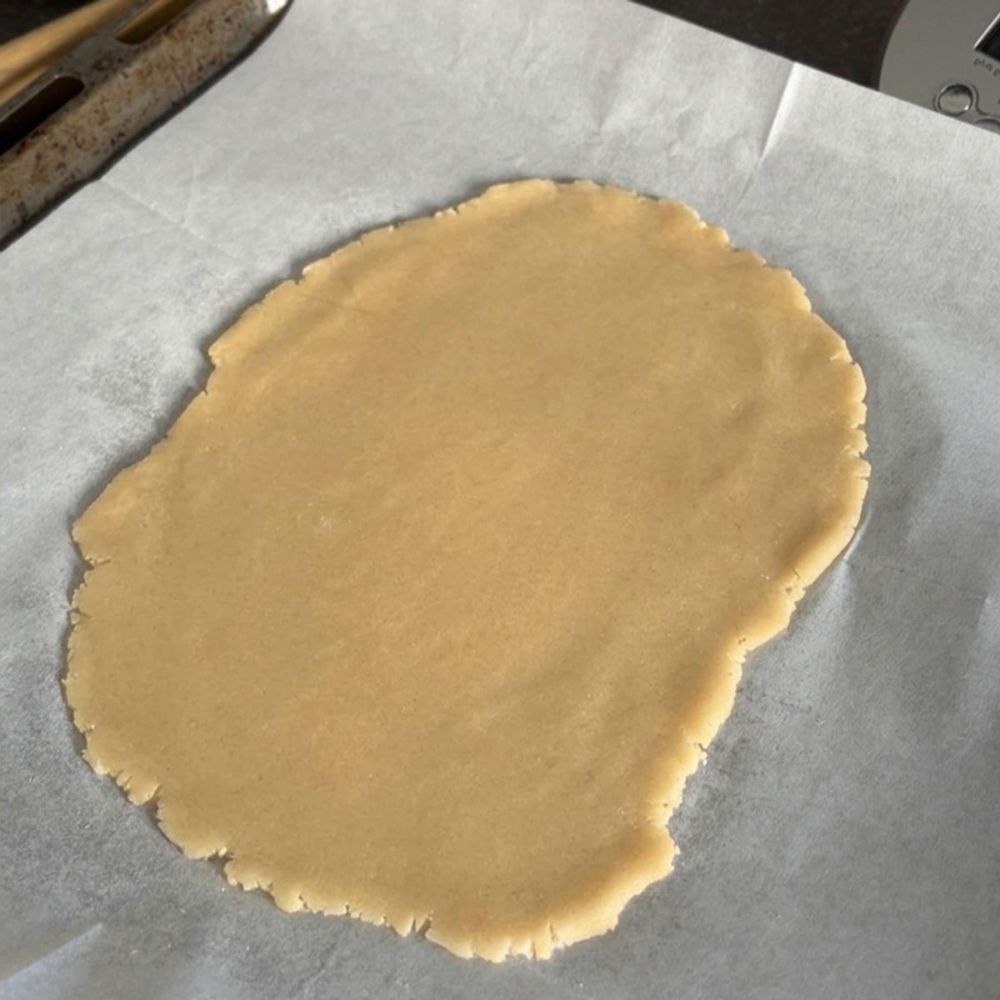
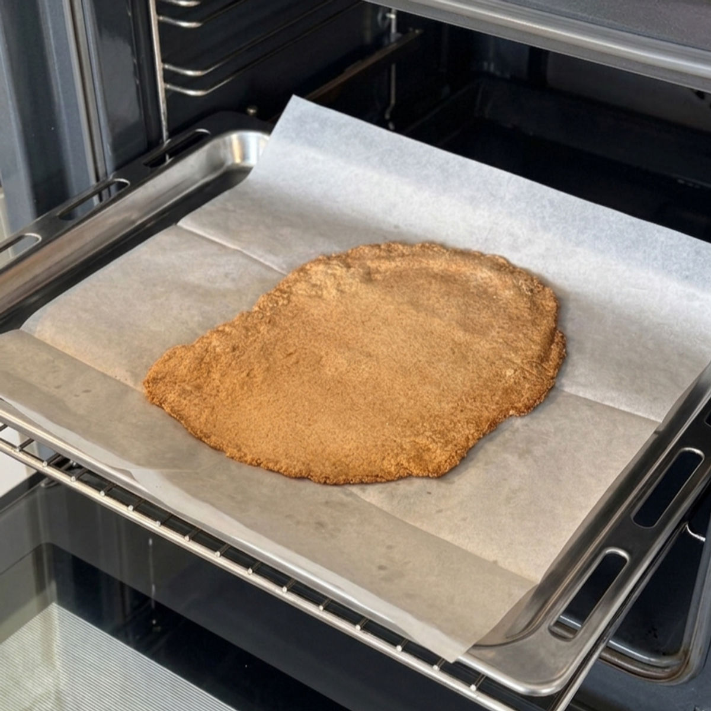
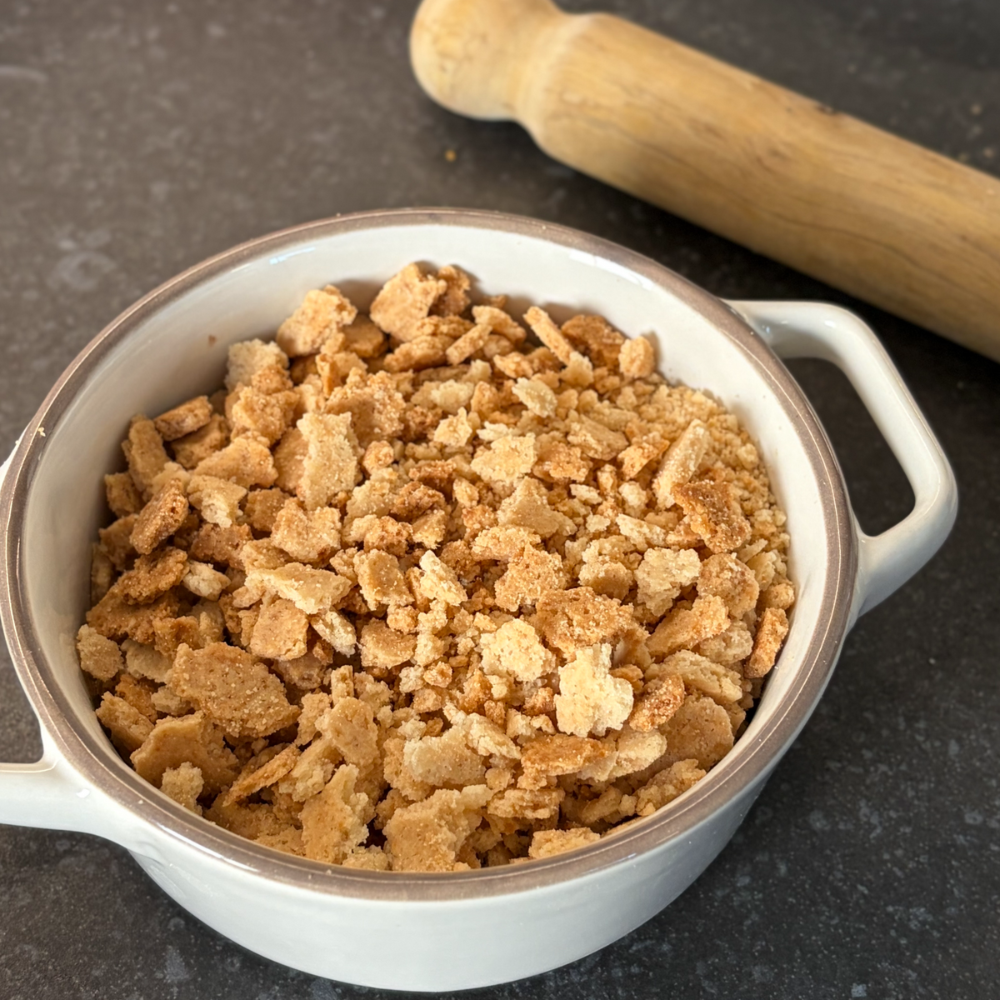
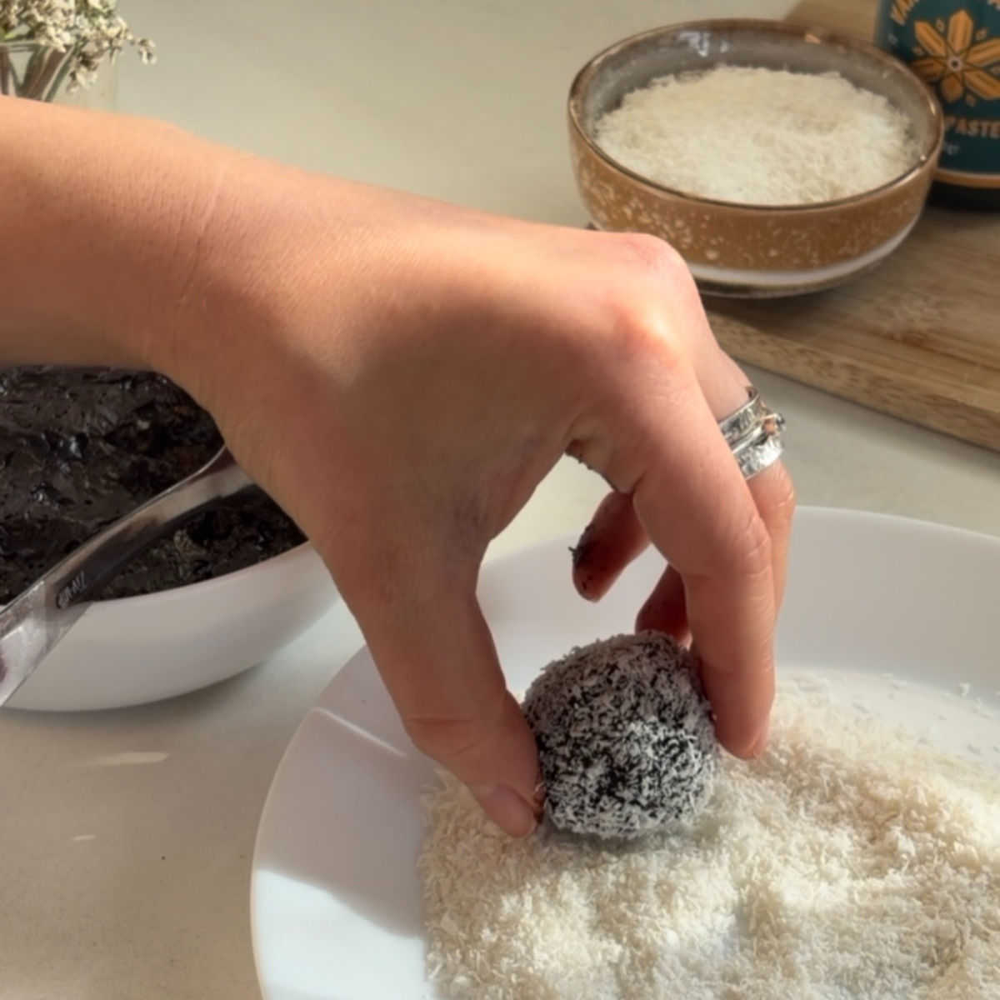

כדורי שוקולד מהילדות
טבלת ערכים תזונתיים בקירוב :
טבלה זו היא עבור מתכון עם ציפוי קוקוס, סוויטאנגו, שמנת לבישול 9%, אבקת קקאו עם 10 גרם פחמימה ל100 גרם, קמח שקדים עם 9.1 גרם פחמימה ל100 גרם, ושוקלד 84% (ללא סוכר ו17 גרם פחמימה ל100 גרם)
| ערכים | כדור (23 גרם ) | 100 גרם |
|---|---|---|
| קלוריות | 86 | 374.2 |
| פחמימות | 2 | 8.9 |
| חלבונים | 2.1 | 9.3 |
איך אני אוהבת כדורי שוקולד של פעם, אתם לא מבינים בכלל!
במשך תקופה ארוכה ניסיתי לפתח גרסה בריאה יותר לטעם הילדות שכולנו מכירים. האמת? זה היה מאתגר. פעם התוצאה יצאה רכה מדי, פעם מרירה מדי, ופעם זה פשוט הרגיש כמו טראפלס – ולא כדורי השוקולד האמיתיים שחיפשתי.
אחרי הרבה עבודה, גיליתי שאין קיצורי דרך: הסוד טמון בעוגיות. הן אלו שיוצרות את המבנה המושלם וסופגות פנימה את כל העושר של השוקולד והקקאו. אז הכנתי לכם מתכון שמתחיל בעוגיות פשוטות-פשוטות שמהוות את הבסיס להכל. התוצאה היא כדורי שוקולד נוסטלגיים, במרקם המדויק ובטעם עמוק. תהנו!

מתכון:
כמות: כ-16 כדורי שוקולד
מרכיבים:
לביסקוויטים:
100 גרם קמח שקדים
1.5 כפות (22 גרם) סוויטאנגו / 2 כפות (30 גרם) דבש (שימו לב: דבש אינו מתאים לסוכרתיים ולקיטוגנים)
2 כפות מים / 1 כף מים- אם משתמשים בדבש
1 כפית תמצית וניל
לבלילה:
40 גרם חמאה
100 מ"ל שמנת (מתוקה או לבישול) או 80 מ"ל שמנת - אם משתמשים בדבש
30 גרם שוקולד מריר (אני משתמשת ב84% ללא סוכר)
טיפ: אם משתמשים בשוקולד יותר מתוק התאימו את כמות הממתיק בהתאם
40 גרם אבקת סוכר סוויטאנגו / 3 כפות (45 גרם) דבש (שימו לב: דבש אינו מתאים לסוכרתיים ולקיטוגנים)
30 גרם קקאו
קורט מלח
20 גרם קוקוס לציפוי- אפשר גם כל ציפוי אחר שאוהבים
הוראות הכנה:
ביסקוויטים:
לוקחים את הקמח שקדים, סוויטאנו מים ותמצית וניל ומערבבים יחד.
קחו את התערובת ושטחו על נייר אפיה, ניתן לשטח ידנית (הריטבו מעט את ידיכם ושטחו) או קחו נייר אפייה נוסף כסו את הבצק ושטחו עם מערוך, שתי הדרכים יעבדו. אני הכנתי בסקוויט אחד גדוח כיוון שאנחנו נפורר אותו בהמשך בכל מקרה אז אין צורך ליצור כמה עוגיות.
חממו תנור על 160 מעלות ואפו בין 15-12 דקות עד להזהבת הביסקוויט. ניתן לראות את הצבע בתמונות בסוף.
חכו לקירור הבסיקוויטים.
בלילה:
חממו במיקרו את החמאה והשמנת המתוקה עד להמסה של החמאה.
הוסיפו את השוקולד לתערובת החמה וערבבו עד שהשוקולד נמס.
הסויפו את הממתיק, הקקאו ואת המלח וערבבו לתערובת אחידה.
שברו את הביסקוויטים לחתיכות קטנות (אפשר לשים בשקית ולדפוק עם מערוך או לגרוס מעט).
הסיפו את הביסקוויטים לבלילה וערבבו.
קררו 45 דקות במקרר.
צרו צורות של כדורים וגלגלו בקוקוס הטחון או בתוספת שבחרתם.
הערות:
תוספות נחמדות שאפשר להוסיף לבלילה של כדורי השוקולד:
1/2 כפית ברנדי
1/2 כפית אספרסו או ליקר קפה
1/4 כפית גרידת תפוז
סרטון מתהליך ההכנה:
לינק לסרטון קצר
תמונות מתהליך ההכנה:

בצק ביסקוויטים לפני אפייה

בצק ביסקוויטים אחרי אפייה

ביסקוויטים מרוסקים

יצירת כדורים